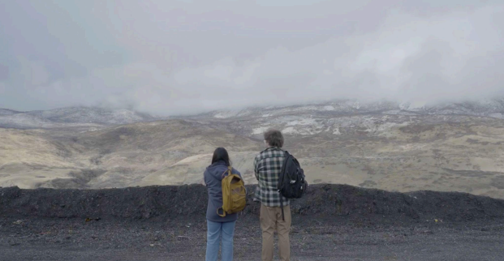

“PICTURE PERFECT” (2026) dir. by Olivia Dinkelman

PAST WORK: UTAH VALLEY UNIVERSITY DELIVERABLES
ONGOING WORK: UTAH VALLEY UNIVERSITY
Filmmaking II:
Back to the Future Swede" (Director)
"The Martian Swede" (Swing)
"Marty Supreme Swede" (Script Supervisor)
"Joker Swede" (1st Assistant Director)
"Hadestown Swede" (Director of Photography)
"Oceans 11 Swede" (Sound)
WORK OUTSIDE OF UVU COURSES
Producer - "Momma's Boy" (2026) dir. by Diyana Love (ongoing, filming March 2026)
Production Design - “Frankenstein Swede” (2025) dir. by Colby Sharp
Art Assistant:
"Your Daughter, Clytnyann" (2025 UVU FEMME) dir. by Jerusha Hess
"Touch Me Not" dir. by Annika Halverson (2025)
"The Nicest Guy I Know" dir. by DJ Stewart (2025)
Production Assistant on various projects
Grip/Gaff on various projects
1st & 2nd Assistant Director on various projects